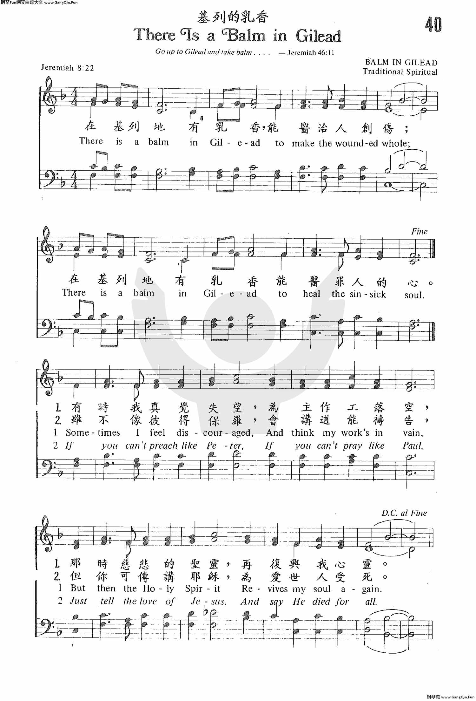

0706 There Is a Balm in Gilead _Spiritual 基列乳香 BALM IN GILEAD
▲
| 簡介
There Is a Balm in Gilead |
| This African American spiritual offers
a long-delayed answer to the prophet Jeremiah’s question, “Is there no
balm in Gilead?” (Jeremiah 8:22). No earthly remedy can compare with the
healing that comes from a sense of God’s presence; nothing else can heal
“the sin-sick soul.” |
|
|
531基列乳香 |
|
Refrain:
There is a balm in Gilead
to make the wounded whole,
there is a balm in Gilead
to heal the sin-sick soul.
Sometimes I feel discouraged
and think my work's in vain,
but then the Holy Spirit
revives my soul again. Refrain
2 If you cannot preach like Peter,
if you cannot pray like Paul,
you can tell the love of Jesus
and say, "He died for all." Refrain
Psalter Hymnal, (Gray), 1987
|
有時頓覺喪氣灰心，做事徒勞空經營，
耶時聖靈。施恩扶幫，再次復興我靈。
若講道不能像彼得，禱告不能像保羅，
你可述說耶穌大愛，祂死為眾罪過。
無論何時都不灰心，因耶穌是你良友，
缺乏智慧，更應祈禱，祂賞賜必豐厚。
(副歌)
在基列地有乳香，使傷者得康寧；
在基列也有乳香，能治病患心靈。 |
|
https://gangqin.fun/6216.html

 |
| |
|
| 531. 基列乳香 (There
Is A Balm In Gilead) |
|
[試聽] |
Just a Closer Walk with Thee
(如果你看不到媒體播放器, 請直接點擊歌名)
我本軟弱主剛強，求主保守離罪網；
心靈滿足無憂傷，當我走，求領我近祢旁。
經勞苦罪網世界，若我跌倒誰關懷？
若有重擔誰分負？
親愛主，惟有祢，我救主。
當我脆弱的生命，不久即消逝離去；
恩主求祢來引領，到天家，永遠與主同居。
副
歌
主，我願更親近祢，與主相親樂無比，
每日同行更親密，親愛主，求祢，懇求祢。
近半世紀來，這首聖詩被數百位歌唱家灌成唱碟，無論在宗教音樂或流行歌曲中，它都是一首熱門的詩歌。 幾十年來不斷有人在查考它的典故，迄今無法查得準確的資料。 一度有人以為這是陶賽（Thomas
A. Dorsey見 p.45）的作品，因其風格與「親愛主，牽我手」類似，但是這首詩歌在陶賽寫作福音詩歌以前早已存在，祗因未付印，未被人知曉。
這是一首黑人靈歌（Negro
Spiritual），原調取自傳統民謠，後由班笙（John
T. Benson）改編。 這首聖詩雖在第二次世界大戰時才崛起，但根據非裔美人的歷史記載，這首歌在十九世紀美國南北戰爭前已有，南方的黑奴經常在田間工作時唱此歌。 事實上有許多福音詩歌，追溯其歷史背景，都出自非裔。
這首聖詩在黑人教會世代相傳，幾乎是黑人教會的會歌。 直到 1940年，福音詩歌的先驅毛理斯（Kenneth
Morris ）將它加上副歌付印，於是有許多男聲四重唱在電台播唱。二次大戰結朿時，這首歌在白人教會也風靡一時，成為本世紀最流行的歌曲之一。
這是一首祈求與訴願的詩歌，代表黑奴們被壓迫的呼籲，使徒在耶穌被釘十字架後的訴求，基督徒遭遇到苦難時的心聲。 作者知道我們會有疑難與痛苦，但他在詩中也充滿了信心。
一般西方的音樂重音調，但黑人靈歌則重節拍，且具搖擺感（Swing），而歌詞多疊句或重複呼應，如
「主啊，我要做個信徒」（Lord, I Want to Be a Christian），「你在那�堙H」（Were
You There？），
「這世界非我家」（This
World Is Not My Home），
「有人在你心外叩門」（Somebody’s Knocking at Your Door），
「基列的乳香」（Balm
in Gilead）
等等。 多數黑人靈歌的作者都已失傳，但它們在聖詩史上卻佔重要的一席。 黑人靈歌如以男聲四重奏清唱，尤撼人心弦。
http://www.mbcsfv.org/chinese/library/hymncampanions/073.html
“在基列岂没有乳香呢？”(耶利米书8章22节)。
在旧约圣经中，有三处不同的地方提到“乳香”或者来自约旦河东部山区基列的药膏。创世记37章记载约瑟的哥哥们要谋害约瑟，他们见有一伙米甸的以实玛利人从基列来，用骆驼驮着香料、乳香、没药，要带下埃及去
(25节) 。耶利米书46章11节提到去基列取乳香治疗。耶利米书8章22节向常在犯罪的犹大人提出以下的问题：
在基列岂没有乳香呢 ？
在那里岂没医生呢 ？
一首著名的非洲裔美国灵歌引用的经文歌词如下：
在基列地有乳香
能医治人创伤；
在基列地有乳香
能医罪人的心。
主耶稣是世上一切受伤者真正的 “基列的乳香”。1852年，英国牧师费尔博 (J. C. Philpot)
传讲有关耶利米书8章22节的内容时，他指出神的恩典总是比我们的罪还大：
乳香的疗效胜过罪疚之伤；因为救赎之恩胜过罪里的毁灭。
如果我们认识主耶稣，我们将来要到天国去，因为祂的恩典比我们的罪更大。基督的宝血是乳香，能医治罪恶的最深伤口。当我们犯罪跌倒时，祂扶持我们并使我们的灵魂苏醒，得痊愈。
在基列岂没有乳香呢 ？有，就在这里。能够治愈伤口的就是主耶稣。
神圣的主，在你有医治破碎生命的大能。祢的一句话，我们就能得痊愈。阿们
“在基列岂没有乳香呢？”(耶利米书8章22节)。
在旧约圣经中，有三处不同的地方提到“乳香”或者来自约旦河东部山区基列的药膏。创世记37章记载约瑟的哥哥们要谋害约瑟，他们见有一伙米甸的以实玛利人从基列来，用骆驼驮着香料、乳香、没药，要带下埃及去
(25节) 。耶利米书46章11节提到去基列取乳香治疗。耶利米书8章22节向常在犯罪的犹大人提出以下的问题：
在基列岂没有乳香呢 ？
在那里岂没医生呢 ？
一首著名的非洲裔美国灵歌引用的经文歌词如下：
在基列地有乳香
能医治人创伤；
在基列地有乳香
能医罪人的心。
主耶稣是世上一切受伤者真正的 “基列的乳香”。1852年，英国牧师费尔博 (J. C. Philpot)
传讲有关耶利米书8章22节的内容时，他指出神的恩典总是比我们的罪还大：
乳香的疗效胜过罪疚之伤；因为救赎之恩胜过罪里的毁灭。
如果我们认识主耶稣，我们将来要到天国去，因为祂的恩典比我们的罪更大。基督的宝血是乳香，能医治罪恶的最深伤口。当我们犯罪跌倒时，祂扶持我们并使我们的灵魂苏醒，得痊愈。
在基列岂没有乳香呢 ？有，就在这里。能够治愈伤口的就是主耶稣。
神圣的主，在你有医治破碎生命的大能。祢的一句话，我们就能得痊愈。阿们
https://m.creaders.net/blog/d/248740
近東幾類藥用松香之一，但未能鑑定。此物不在基列生長，但因由基列運至埃及和腓尼基而得名（創三十七25；結二十七17）。基列乳香大概有止血、防腐和其他醫療的功效。另參：「醫藥」；「植物（香樹脂）」。――
證主聖經百科全書
https://cdn-news.org/news/20977
02
「乳香」的含義和期待
其實，吉利德這個名字源自《聖經》中的「基列的乳香」。
據《聖經．耶利米書》記載。基列是約旦河以東古代巴勒斯坦地區的名字。基列這個地方因為盛産乳香而聞名，而乳香是一種從樹中提取的貴重香料，具有醫治的作用。聖經中多次提到它的醫治功效，例如：
－
「在基列豈沒有乳香呢？在那�堸Z沒有醫生呢？我百姓為何不得痊癒呢？」（耶利米書8:22）
－
「巴比倫忽然傾覆毀壞。要為她哀號；為止她的疼痛，拿乳香或者可以治好。」（耶利米書51:8）
其實除了醫治，乳香還有聖潔、獻祭的作用，例如：
－
「若有人獻素祭為供物給耶和華，要用細麵澆上油，加上乳香。」（利未記2:1）
－
「又要把淨乳香放在每行餅上，作為紀念，就是作為火祭獻給耶和華。」（利未記24:7）
不只在聖經中，久遠的歷史中，乳香給人的感覺就是聖潔和充滿醫治的。埃及人利用乳香來保存屍體，製作木乃伊，地中海區的人們也將乳香當作美容聖品；而在傳統的中草藥材中也會經常使用乳香來治療各種病症…。在古代，全世界的人們都通過乳香，寄託著聖潔、醫治的希望。
http://www.equiptoserve.org/etspedia/%E8%81%96%E7%B6%93%E5%9C%B0%E7%90%86%E8%BE%AD%E5%85%B8/%E5%9F%BA%E5%88%97%E5%9C%B0
基列、基列地 (Gilead；Gilead, Land of)
首先，「基列」這名字可用廣義和狹義來定義，再把狹義的地域分為「南半基列地」和「北半基列地」。地名原意是「多岩石」或「見證之堆」。
按廣義來說，基列可以包括整個（屬以色列）的外約但（參 申2:36，特別是申34:1；士第十至十二章,
20:1；王下15:29）。有趣的是撒上13:7用「迦得」來指某一地區，但卻用「基列來泛指整個境城。王下十10:33同樣將它用作一概括性名詞，在那�堙u基列全地」就是指（屬以色列的）外約但，即是包括「狹義的基列」、往南到亞嫩的地區和巴珊。
按狹義的基列來說，它是指一多山、多叢林的地帶，南界由希實本（Heshbon）以西到死海的北端，北面向今日的雅姆克河和雅姆克窪低（Wadi Yarmuk）伸展，到距離雅穆以南約29公里之處變為平原。這些平原在北面繼續延伸為巴珊地。「狹義的基列」便被由東流向西的雅博河（Jabbok）下游一分為南北兩半了；而「基列山」及「基列城」也是屬於狹義的基列之內。這雅博河南北的多樹山區，被形容為位於希實本南面平原或台地的城市和北面的巴珊之間；另見書13:11（注意上下文）。
由於基列的南北兩部分都可單獨的被稱為「基列」，我們即管稱它們為「南半基列地」和「北半基列地」，好讓讀者能夠掌握其版圖。
基本上，「南半基列地」（即希實本至死海這路線以南），一直到亞嫩河的地區，是一處起伏不平的高原，適合種植穀物及飼養牛羊。「南半基列地」本屬於亞摩利王西宏，以色列人進入迦南期間，成功地攻佔了基列，把南半部的基列地給了流便、迦得兩個支派（申3:12,
3:16）。除了書13:31，在舊約聖經中的「基列山地的一半」多數是指「南半基列地」，特別是雅博以南的基列（屬迦得支派）之地域（申3:12「基列山地的一半」，參申3:16；書12:2「基列一半、直到亞捫人的境界、雅博河」,
12:5「基列一半、直到希實本王西宏的境界」；參 書13:25）。
至於「北半基列地」，就是雅博以北的基列，本屬於巴珊王噩（申3:13「其餘的基列地」）。後來，以色列人分地業是把「北半基列地」給了瑪拿西半支派（申3:15；書17:1,
17:5-6）。前文提及書13:31的「基列的一半」卻是用來形容「北半基列地」，亦即是申3:15中瑪拿西半支派的瑪吉所得之地，並非指「南半基列地」。
在申3:12及3:16，和申3:13及3:15中，全名和簡稱的次序是特別值得注意的。一個名詞或稱謂同時有廣義及狹義，或同時用全名及簡稱，無論在古代或今天都是一個普遍的現象。對於舊約中出現的基列一詞，只要我們考究一下上下文，便知到底是指哪一含意了。
https://www.ebaomonthly.com/ebao/readebao.php?a=20131207
餘暇
“當希律王的時候，耶穌生在猶太的伯利恆；有幾個博士從東方來到耶路撒冷…進了房子，看見小孩子和他母親馬利亞，就俯伏拜那小孩子，揭開寶盒，拿黃金乳香沒藥為禮物獻給他。”（馬太福音2:1-11）
從上列的聖經章節中可以看出，在二千年前，“乳香”Frankincense能與黃金，沒藥並列，是一種非常矜貴的物品，所以從東方來的幾位博士才會把乳香獻給“那生下來作猶太人之王的”（馬太福音2:2）。
“若有人獻素祭為供物給耶和華，要用細麵澆上油，加上乳香；帶到亞倫子孫作祭司的那�堙A祭司就要從細麵中取出一把來，並取些油，和所有的乳香，然後要把所取的這些作為紀念，燒在壇上，是獻與耶和華為馨香的火祭。”（利未記2:1-2）
從這一節中，可以知道，原來在耶穌出生之前，乳香已經是獻給神的祭品之一。
到底乳香是甚麼呢？

乳香
乳香的英文除了Frankincense之外，又叫Olibanum。很多樹木受傷，或被蟲蛀，或受到真菌感染時，會在傷口分泌出一種帶有油脂的液體用來保護自己，這些液體凝固後，便是樹脂。有一種橄欖科Burseraceae的植物，叫“乳香木”Boswellia
spp.，這種樹的樹脂，含有揮發性的油脂，燃燒時會散發出帶有香味的煙，這些煙不但能驅除蚊蟲，也能舒緩呼吸系統的不適，和醫治關節炎等疾病，這種乳香木的樹脂，便是乳香。
顏色愈白的乳香，是愈純的乳香，一般的乳香都會帶有黃色或紅色。據說，不同品種的乳香，氣味並不相同；再者，即使是同一種乳香木，在不同的年份採收，乳香的氣味也會有所不同。
“…示巴的眾人，都必來到；要奉上黃金乳香，又要傳說耶和華的讚美。”（以賽亞書60:6）
“示巴”是一個古時位於現今非洲的埃塞俄比亞（Ethiopia，又譯作“衣索比亞”）至阿拉伯半島的也門（Yemen，又譯作“葉門”）一帶的國家，當地一直都是黃金和乳香的產地之一。聖經中所提到的示巴國來的乳香，品種很可能是產自埃塞俄比亞的Boswellia
thurifera，或是產自阿曼（Oman）的Boswellia
sacra。其實那一帶還有其他品種的乳香木，例如產自索馬里（Somalia，又譯作“索馬利亞”）的Boswellia
carterii。順帶一提，印度也有乳香出產，“齒葉乳香”Boswellia
serrate便是來自印度；不過，古時交通並不發達，在以色列能獲得的乳香，應該是來自非洲至中東一帶（即是來自示巴）的品種。
“埃及的民哪，可以上基列取乳香去；你雖多服良藥，總是徒然，不得治好。”（耶利米書46:11）
這一節所說的乳香，英文版本是Balm，就是“香脂”或“香膏”的意思。根據張文亮教授的解說，基列是出產一種叫Populus
candicans的楊樹的地方，這種楊樹的樹皮有淡淡的香味，樹皮中含有“水楊素”Salicin，有止痛及抑制發炎的作用。在古時這種樹皮很可能會用來製成藥膏，由於Populus
candicans並沒有對等的中文名稱，所以這種藥膏便被翻譯為“乳香”。
“在基列豈沒有乳香呢？在那�堸Z沒有醫生呢？我百姓為何不得痊愈呢？”（耶利米書8:22）
也有人認為，“基列的乳香”可能是蒺藜科Zygophyllaceae的“耶利哥香脂樹”Balanites
aegyptiaca（又譯作“乳香樹”），或漆樹科Anacardiaceae的“乳香樹”Pistacia
lentiscus（又譯作“乳香黃蓮木”），耶利哥香脂樹的果實能提煉藥油，有治療皮膚上的傷口，和防腐的作用；而乳香黃蓮木的樹脂能止血，並有怡神作用；可是以上論及的這三種植物，都未能確定就是“基列的乳香”。然而根據這些資料，可以知道，示巴的乳香，和基列的乳香，兩者是來自完全不同的植物。
過度的收割，放牧，開墾農地，加上自然的火災，蟲害等等因素，令各種乳香木Boswellia
spp.的數量急劇下降；剩下來的，由於生存環境太惡劣，結子不易，即使能成功結子，發芽率也偏低，導致乳香木已經成為瀕危植物。
雖然可能會失去這麼珍貴的樹木是非常可惜的一件事，可是：
“耶和華喜悅燔祭和平安祭，豈如喜悅人聽從祂的話呢？聽命勝於獻祭，順從勝於公羊的脂油。”（撒母耳記上15:22）
希望大家能好好地愛惜天父賜給我們的大自然，同時能每天都在主內成長。在此與大家分享一首詩歌。祝大家聖誕快樂！
WHAT CAN I GIVE HIM?
by Christina Rossetti
（1830-1894） |
獻甚麼給主
克莉絲蒂娜．羅塞蒂
（1830-1894） |
What can I give Him, poor as I am?
If I were a shepherd, I would bring a lamb.
If I were a wise man, I would do my part.
Yet what can I give Him?
Give my heart. |
我這樣貧窮，獻甚麼給祂？
如果我是牧人，獻隻羊給祂；
如果我是博士，獻黃金，乳香，沒藥。
但我能夠獻甚麼？
獻我心。 |
https://hymnary.org/text/sometimes_i_feel_discouraged_spiritual
In the Old Testament, Gilead was the name of the mountainous region east of the
Jordan River. This region was known for having skillful physicians and an
ointment made from the gum of a tree particular to that area. Many believed that
this balm had miraculous powers to heal the body. In the book of Jeremiah, God
tells the people of Israel that though many believe in the mysterious healing
power of this balm, they can’t trust in those powers for spiritual healing or as
a relief of their oppression. He reminds them that He is ultimately in control,
and only He can relieve their suffering. In the New Testament, God answers the
suffering of His people by sending His own son to take our place. Jesus becomes
our “balm in Gilead.” It is Him we are called to turn to in our times of trial
for healing and comfort. We sing this song with that assurance: no matter our
hardships or supposed shortcomings, Jesus loves us enough to take our suffering
upon Himself.
Text:
Since the text was written, probably sometime in the early nineteenth century,
it has remained mostly unaltered. There is one verse found in some hymnals and
not others: “Don’t ever feel discouraged, for Jesus is your friend, and if you
lack for knowledge He’ll not refuse to lend.” This verse is most applicable when
the song functions as a call to witness for Christ no matter how unqualified we
may feel.
Tune:
This is a hymn that doesn’t need much accompaniment and can be very powerful
when sung a cappella. In the “When/Why/How” section, I suggest a
soloist-congregation divide on verse and chorus. If you do this, try having your
pianist play only block chords on the verses, giving the soloist some room to
improvise, and then come in more fully on the refrain. What’s really interesting
about this hymn is that you could completely switch this around for a much
different feel. If you pull back on the refrain with just the soloist singing,
it becomes a comforting message to the weary masses singing the verses. The
Morriston Orpheus Choir performs an arrangement of this that demonstrates the
loud cry of the verse and the soft, gentle assurance of the refrain. Chanticleer
and Yvette Flunder demonstrate beautiful vocal harmonies and a soft gospel sound
that could be imitated by a choir or small vocal ensemble.
Notes
BALM IN GILEAD consists of
two melodic lines, each of which is repeated in varied form. Have the
congregation sing either in parts or in unison. It is also possible to adapt
the call-and-response technique, so common in spirituals, to this hymn: a
soloist sings the stanzas, and the entire congregation sings the refrain.
When/Why/How:
This hymn can be used in a service of lament or as a song of comfort in times of
discouragement. Note the difference in subject matter between the verses and the
refrain. In the refrain, Jesus is the subject, and in the verses, we as God’s
people are the subject. In order to make this distinction clear, you could have
a soloist sing the verses and the congregation come in on the refrain.
There is a powerful paradox in this hymn. Jesus is our balm, our healer, and yet
He could only bring us healing by being wounded Himself. A hauntingly beautiful
song by The Brilliance (sibling band of Gungor) that recently came out is called
“Wounded Healer.” This song underscores the very same paradox found in “Balm of
Gilead” and musically fits the softer mood of the hymn. Since this will most
likely be a brand new song for most congregations, I would suggest doing it as
the offertory piece or as a solo response and letting the congregation reflect
on the words rather than try to figure out the melody as they go.
https://sermonwriter.com/hymn-stories/there-is-a-balm-in-gilead/
African-American slaves sang spiritual songs to bring a bit of light into their
otherwise bleak existence. Their songs comforted and strengthened them. Some,
such as “Go Down, Moses,” held out promise of freedom, but in a way that slave
owners found it difficult to repress. After all, who could deny slaves the
right to recount the Biblical story of God freeing the Israelites from Egyptian
slavery?
The spiritual, “There Is a Balm in Gilead,” takes a different tack, emphasizing
the comfort that God makes available. A balm is an ointment that reduces pain
or heals sores.
“There Is a Balm in Gilead” finds its roots in Jeremiah 8:22, where the prophet
asks, “Is there no balm in Gilead? Is there no physician there?”
Gilead was a mountainous part of the territory of Manasseh, one of the twelve
tribes of Israel. It was known for plants and herbs that could be used to
produce healing balms. But the prophet told Israel:
In vain do you use many medicines;
there is no healing for you.
The nations have heard of your shame,
and the earth is full of your cry;
for the mighty man has stumbled against the mighty,
they are fallen both of them together (Jeremiah 46:11-12).
But this song assures those who are discouraged or suffering that there is,
indeed, “a balm in Gilead to make the wounded whole. There is a balm in Gilead
to heal the sin-sick soul” (refrain).
The song admits discouragement, thinking that one’s work is in vain. “But then
the Holy Spirit revives my soul again” (v. 1).
It also encourages spreading the Good News to help others who might be
suffering.
If you cannot preach like Peter,
If you cannot pray like Paul,
Just tell the love of Jesus,
And say He died for all (v. 2).
That’s the ultimate hope, of course—that Jesus died for all—the innocent (of
whom there are none) and the guilty (of whom there are many)—plantation owners
and slaves alike—and ordinary people like you and me.
Scripture quotations from the World English Bible.
Copyright, 2015, Richard
Niell Donovan
https://dianaleaghmatthews.com/there-is-a-balm-in-gilead/#.YNM12_kzbIU

Jeremiah 8:22 says “Is there no balm in Gilead? Is there no physician there?
Why then is there no healing for the wounds of my [God’s] people?” {Gilead
also mentioned in Jeremiah 46:2,11 and Jeremiah 22:6}
It is believed this passage inspired the spiritual There
Is a Balm in Gilead. The song emphasizes the comfort found in the Lord
God, which also acknowledging the discouragement of one’s work being in vain.
“A balm is an ointment that reduces pain or heals sores.”
Gilead was a mountainous part of the territory of Manasseh, which was one of
the twelve tribes of Israel. {Manasseh was Joseph’s oldest son.} The area was
known for the healing balms made with plants and herbs in the area.
A version of the refrain was published in the 1854 Washington Glass hymnal
“The Sinner’s Cure”. Glass attributed the hymn to himself. This is the first
known appearance of the spiritual.
The Fisk Jubilee Singers popularized the spiritual on their tours.
There are numerous arrangements of the spiritual and it is included in several
hymnals.
https://en.wikipedia.org/wiki/There_Is_a_Balm_in_Gilead
From Wikipedia, the free encyclopedia
"There Is A Balm in Gilead" is a
traditional African
American spiritual.
The date of composition is unclear, though the song dates at least to the
19th century. A version of the refrain can be found in Washington Glass's
1854 hymn "The Sinner's Cure". There is an allusion to the song in Edgar
Allan Poe's poem The
Raven (1845).
History[edit]
The “balm
in Gilead” is a reference from the Old
Testament, but the lyrics of this spiritual refer
to the New
Testament concept of salvation through Jesus Christ.
The Balm of Gilead is interpreted as a spiritual medicine that is able to
heal Israel (and sinners in general). In the Old Testament, the balm of Gilead is
taken most directly from Jeremiah
chapter 8 v. 22: "Is there no balm in Gilead? Is there no physician
there? Why then is there no healing for the wounds of my [God's] people?"
(Another allusion can also be found in Jeremiah chapter
46, v. 2 and 11: “This is the message (of the Lord) against the army of Pharaoh Neco
… Go up to Gilead and get balm, O Virgin Daughter of Egypt, but you
multiply remedies in vain; here is no healing for you” - see also Jeremiah
chapter 22, v. 6.) [1]
The first appearance of the spiritual in
something close to its current form is uncertain. A version of the refrain
can be found in Washington Glass's 1854 hymn "The Sinner's Cure," (see
link below) where it is in 7s.6s.7s.6s rather than the Common
Meter of today's refrain. Glass attributed this hymn to himself, but
like several of the hymns so attributed, it is substantially the work of
another. He attached to one of John
Newton's Olney hymns [2] of
1779 this refrain:
-
There is balm in Gilead,
-
To make the wounded whole;
-
There's power enough in heaven,
-
To cure a sin-sick soul.
There is no mention of the balm of Gilead in
Newton's poem, but it begins:
-
How lost was my condition
-
Till Jesus made me whole!
-
There is but one Physician
-
Can cure a sin–sick soul.
The similarities in the refrain make it
likely that it was written for Newton's verse.
The 1973 edition of the 1925 7-shape
Primitive Baptist songbook Harp of Ages has an unattributed song
"Balm in Gilead" with a similar chorus, but verses drawn from a Charles
Wesley hymn, "Father I Stretch My Hands to Thee."[3]
The second verse quoted below ("If you
can't...") is also found in some versions of another well-known spiritual
"(Walk That) Lonesome Valley." "Wandering verses," as they are often
called, are quite common in the camp meeting and revival context, and were
already found in by 1800 in the African-American community, as shown by
Richard Allen's 1801 "A Collection of Hymns and Spiritual Songs Selected
from Various Authors."
In 1845, Edgar
Allan Poe mentions it in one of the last stanzas of his poem The
Raven:
-
"Prophet!" said I, "thing of evil! – prophet still, if bird or devil! —
-
Whether Tempter sent, or whether tempest tossed thee here ashore,
-
Desolate yet all undaunted, on this desert land enchanted —
-
On this home by Horror haunted – tell me truly, I implore —
-
"Is there – is there balm in Gilead? – tell me – tell me, I
implore!"
-
Quoth the Raven "Nevermore."
http://biblegeography.holylight.org.tw/index/condensedbible_map_detail?m_id=041
士圖三 (041) 俄陀聶、以笏和底波拉 Othniel, Ehud and Deborah (
原圖 )
|
路線行蹤
[ 1 ] [
2 ] [
3 ] [
4 ] [
5 ] [
6 ] [
7 ] [
8 ]
|

http://biblegeography.holylight.org.tw/index/condensedbible_detail?id=1523&top=0904-1
多石的 Rocky，崎嶇的 To be rough
●基列山是約但河東的一條山脈，基列地是指山脈所涵蓋之地，所以兩者是相同的一個地區。它位於亞捫以西，巴珊以南，希實本以北，雅博河從中將其分為南北兩半，全區南北全長約
85 公里，寬約 30 至 45
公里，平均高度約900公尺，最高之處在雅博河的南北兩岸，都是高在1500公尺的山嶺。西側的山坡陡峭，鄰接約但河谷，東部的坡度就平緩得多，全區計有十餘條河流自東往西流，所以地勢相當的崎嶇破碎，但土地肥沃，水源尤其充沛。在約書亞時代，是屬於迦得和瑪拿西東半支派的領土。直到大衛王時，森林仍然茂密，當時城市也不多，主要作物為畜牧，少有耕作，自古就有君王大道從其間由南向北穿過，為其帶來財富。在新約時代，土地已大量開發，羅馬帝國的低加波利省和比利亞就是在基列地，建有七個以上希臘化的大城，都是興盛富有的大都市，足證其富庶之一般。
創31:21 雅各帶著所有的，背著亞蘭人拉班逃跑了，他起身過大河，面向基列山行去，拉班隨後帶人追趕，追了七日，在基列山就追上了。
創37:25 雅各的眾子，將其弟兄約瑟賣給一夥從基列來，用駱駝馱著香料，乳香，沒藥，要帶到埃及去賣的以實瑪利人。
民32:1 流便和迦得子孫的牲畜，極其眾多，他們看見雅謝地和基列地，是可牧放牲畜之地，就要求摩西給他們為業。
民32:39 瑪拿西的兒子瑪吉，他的子孫往基列去，佔了那地，趕出那裡的亞摩利人，摩西就將基列賜給瑪吉，瑪拿西的孫睚珥，去佔了基列的村莊，就稱這些村莊為哈倭特睚珥。
申2:36 約書亞攻取了亞嫩谷邊的亞羅珥，和谷中的城，直到基列。
申3:10 約書亞攻取了平原的各城，基列全地，直到撒迦和以得來，都是巴珊王噩國內的城邑。
申3:12 從亞嫩谷邊的亞羅珥起，約書亞將基列山地的一半，並其中的城邑，都給了流便人和迦得人，其餘的基列地和巴珊全地，給了瑪拿西半支派。又將基列給了瑪吉，從基列到亞嫩谷，以谷中為界，直到亞捫人的交界的雅博河，給了流便人和迦得人。
書12:2 原來基列的一半是屬亞摩利王西宏，一半是屬亞摩利王噩。
書13:24，17:1 摩西將雅謝和基列的各城給了迦得，基列的一半，並亞斯他錄，以得來給了瑪拿西的兒子瑪吉的一半子孫。
士5:17 女士師底波拉和巴拉所作的歌中說，基列人安居在約但河外。(因為他們未參加抵抗夏瑣王耶賓的戰爭 )
士11:1 基列人耶弗他是個大能的勇士，基列的長老請他作基列一切居民的首領，好與壓迫他們的亞捫人爭戰。12:7 耶弗他作以色列的士師六年，基列人耶弗他死了，葬在基列的一座城裡。
士12:3 士師耶弗他招聚基列人與以法蓮人爭戰，因以法蓮人未參加與亞捫人的爭戰，又說你們基列人在以法蓮，瑪拿西中間，不過是以法蓮逃亡的人。基列人把守約但河的渡口，殺了以法蓮人四萬二千名。
士20:1 基列地的眾人也參加討伐便雅憫人的戰爭，聚集在米斯巴。
撒下2:9 掃羅的元帥押尼珥，將掃羅的兒子伊施波設，帶到瑪哈念，立他作王，治理基列，亞書利，耶斯列，以法蓮，便雅憫和以色列眾人。
撒下17:26 押沙龍和以色列人安營在基列地。
撒下17:27 當大衛避押沙龍，到了瑪哈念時，基列的羅基琳人巴西萊，帶著食物和日用品來供應他。
撒下24:6 約押奉令點數以色列人和猶大人時，曾到了基列。
王上4:19 所羅門王的十二個行政區中，第十二個是基列地，就是從前亞摩利王西宏和噩之地，有基別一人管理。
王上17:1 先知以利亞，是基列寄居的提斯比人。
王上22:3，王下8:28，代上6:80，代下18:2，22:5 均是「基列的拉末」。
王下10:33 在那些日子，耶和華才割裂以色列國，使哈薛攻擊以色列的境界，乃是約但河東，基列全地，從靠近亞嫩谷邊的亞羅珥起。
代上2:21 希斯崙娶了基列父親瑪吉的女兒，瑪吉的女兒生西割，西割生睚珥，睚珥在基列地有二十三個城邑，後來基述人和亞蘭人，奪了睚珥的城邑。
代上5:16 迦得的後裔住在基列，與巴珊的鄉村，並沙崙的郊野，直到四圍的交界。
代上26:32 大衛作王第四十年，在基列的雅謝，從這些族中，尋得大能的勇士。
代上27:21 為大衛管基列地瑪拿西那半支派的是易多。
耶8:22 在基列豈沒有乳香呢 ?
耶46:11 埃及的民哪，可以上基列取乳香去，你雖多服良藥，總是徒然，不得治好。
結47:18 以西結所預言以色列的東界是，在浩蘭，大馬色，基列，和以色列地的中間，就是約但河。
摩1:3 先知說，大馬色因他以打糧食的鐵器打過基列，我必不免去他的刑罰。
摩1:13 先知說，亞捫人因為他們剖開基列的孕婦，又擴張自己的境界，我必不免去他的刑罰。
俄19 先知說，便雅憫人必得基列。
亞10:10 先知預言說，主必再領他們出埃及地，出亞述，領他們到基列和利巴嫩，這地尚不夠他們居住。
撒母耳記上 13章7節
有些希伯來人過了約但河、逃到迦得和基列地．掃羅還是在吉甲、百姓都戰戰兢兢的跟隨他。
撒上圖五 (050) 以色列人在掃羅時代的疆土 Land of Israel at the time of Saul (
原圖 ) (
地圖說明 )
|
|
( 基列地 地圖位置
: J45 約但河以東，希實本和雅木河間之山地。 )
|
 |
http://www.5plus2edu.org.tw/joomla/index.php/menu-peopleandplants/menu-jerichobalsam
-
分類：聖經人物與植物篇
-
發佈：2014-09-14, 週日 14:25
-
點擊數：2962

(Data source: flowersinisrael.com)
一.名稱：
二名法：Balanites aegyptiaca
通稱: Desert date, Jericho balsam
二. 類別:
Family科: Zygophyllaceae蒺藜科
Genus屬: Balanites龜頭樹屬
Species種: B. aegyptiaca
三. 原始分佈:
非洲的大部分地區及中東部分地區. 在非洲的塞內加爾(Senegal)為常見樹種, 也是非洲大陸分佈最廣的樹種之一.
現今在以色列境內自然生長的乳香樹, 可見於Arava Valley (near the Jordanian border), Eilat (near
Red Sea coast), Ein-Ged oasis (near the Dead Sea), Bet-Shean Valley (near the
sea of Galilee).
四. 特徵:
1. 常綠或semi-evergreen,灌木或小喬. 樹可高至10-12公尺. 主幹直徑可達60公分, 經常有明顯的縱裂紋. 樹枝多且不規則發展,
有時有圓型樹冠.

(Data source: godasagardener.com)

(Data source: teline.fr)

(Data source: commons.wikimedia.org）

(Data source: blog.msengonihomestays.com)
2. 樹枝上有綠色的長刺，以螺旋狀沿著枝條生長。在長刺的基部長有以兩片樹葉組成的複葉. 樹葉形狀及大小多變, 深綠色, 成熟樹葉似皮革質.

(Data source: teline.fr)

(Data source: sophy.univ-ceznanne.fr)
3. 小花, 黃綠色, 雌雄同花,呈簇狀,生於葉腋. 有五片長型綠色花瓣,7-10支雄蕊, 雌蕊形狀稍大, 單支, 在雄蕊中央. 有香味, 可吸引昆蟲,
但通常自花授粉. 花苞橢圓型, 綠色, 表面覆蓋有軟毛.
4. 枝,葉, 花, 果圖解:

(Data source: africamuseum.be)
5. 花圖解:

(Data source: fossilflowers.org)

(Data source: flora.huji.ac.il)

(Data source: fleurs.cirad.fr)

(Data source: teline.fr)

(Data source: flowersinisrael.com)
6. 果實橢圓型核果, 未成熟時為綠色, 成熟時為棕色至黃色. 神似棗椰(date), 因此乳香樹又稱為Desert date.
果肉甜又苦,可生吃或乾燥後食用. 可製作果汁及含酒精飲料. 乳香樹結果豐富, 成熟樹單棵可結實約一萬顆果實. 種子堅硬, 含大量油脂.

(Data source: flowersinisrael.com)

(Data source: westafricanplants.senckenberg.de)

(Data source: okapigarden.com)
7. 乳香樹根系發達, 向地下可深達7公尺, 向周圍, 直徑可達20公尺. 因此可抗旱, 抗沙塵暴. 在極度乾旱時, 即使樹葉掉光, 其綠色長刺仍可行光合作用,
維持生命.
8. 乳香樹用途很廣，果子及樹葉都為動物所喜愛, 在非洲尤其是大象及長頸鹿的最愛之一. 其樹幹燃燒時少煙, 耐燒,是良好的木炭材.果子可作為人們食物,
以及製作飲料. 其樹葉種子花都可吃. 乳香樹在極惡劣環境都可生存, 甚至乾旱時仍可開花結果, 因此,在非洲遇到飢荒時, 乳香樹是提供食物的重要來源.
乳香樹種子壓榨後所得的油稱為Balanos oil. 其可吸收並保留浸泡其中香草植物的香氣, 而不會腐敗生臭,是古代埃及製作香水, 化妝品的重要基底.
因此埃及人在4000年前就視乳香樹為重要的農作樹種之一.

西元前2051-1981古埃及十一王朝時期所遺留的乳香樹果實
收藏於美國紐約大都會博物館(Metropolitan Museum)
(Data source: metmuseum.org)
在非洲及埃及等地, 乳香樹的樹皮, 樹葉, 樹根, 果實, 種子, 種子油為傳統的民間藥品(folk medicine), 廣泛地使用於各種內科疾病,
如解熱, 瘴氣, 痢疾, 催吐, 黃疸, 降血糖, 抗糖尿, 胃痛, 驅蟲…等等.
其種子油亦用於皮膚傷口的治療.
因此傳統上,乳香樹是重要的具有醫療功能的樹種之一.
五. 聖經記載
中文聖經所稱的乳香，英文聖經分為兩種：Balm( ),
and Frankincense(
),
and Frankincense( ).
).
英文所稱的Frankincense是為獻祭時所用的香料成份之一, 是一種乳香屬(Boswellia)植物, 特別是Boswellia sacra,
的樹脂.兩者的來源植物不同.

葉門(Yemen) 的Frankincense
(Data source: en.wikipedia.org)

Boswellia sacra
(Data source: en.wikipedia.org)
本文的乳香Balm主要做為醫療之用，乳香樹(Balanites aegyptiaca) 是可能的樹種之一.
聖經有關乳香(Balm) 或基列乳香(Balm of Glead) 的記載如下:
1. 創世記三十七章25節-28節, 約瑟遭其兄弟陷害, 被賣給來自基列的以實瑪利人, 他們正用駱駝馱著香料, 乳香, 沒藥, 要帶下埃及去.

‘The camel train’ By Emile Rouergue,1855.
(Data source: en.wikipedia.org)

(Data source: bcwe.org)
2. 乳香為迦南地土產之一.
舊約創世記四十三章11節, 雅各允許兒子們第二次下埃及糴糧, 但要帶著當地土產中最好的去送給糶糧的(其實是約瑟) 做為賠罪之禮. 乳香為禮物之一.
3. 醫治用的基列乳香.
先知耶利米在耶利米書中三次提到作為醫治之用的基列的乳香.
‘在基列豈沒有乳香呢? 在那裡豈沒有醫生呢? 我百姓為何不得痊癒呢?’------------耶8:22.
‘埃及的民哪, 可以上基列取乳香去; 你雖多服良藥, 總是徒然, 不得治好.’-----------耶46:11.
‘巴比倫忽然傾覆毀壞, 要為他哀號, 為止他的疼痛, 拿乳香或者可以治好.’-----------耶51:8.
六. 參考資料:
1. 和合本聖經.
2. 啟導本聖經.
3. Balanites aegyptiaca
-----------en.wikipedia.org.
4. Balsam
----------jewishencyclopedia.com
5.Characterization of Desert Date Saponins and Their Biological Activities.
----------aranne5.lib.ad.bgu.ac.il.
6.Jeremiah & Balm of Gilead
-----------Godasagardener.com/2012
7.Balanos oil
------------en.wikipedia.org.
8. A review on Balanties aegyptiaca Del (desert date):
Phytochemical constituents,traditional uses,and
pharmacological activity
-----------www.ncbi.nlm.nih.gov/pmc
9. Balanties aegyptiaca,plants of the Bible
------------flowersinisrael.com.